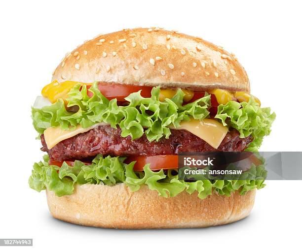

Homemade burgers
Ingredients
- 500g chicken meat
- 1 small onion, diced
- 1 egg
li>
- 1 tbsp vegetable oil
- 4 burger buns
- All or any of the following to serve: sliced tomato, beetroot, horseradish sauce, mayonnaise, ketchup, handful iceberg lettuce, rocket, watercress
Steps:
- Tip 500g chicken meat into a bowl with 1 small diced onion and 1 egg, then mix.
- Divide the mixture into four. Roll the mixture into balls, each about the size of a tennis ball with wet hands.
- Set in the palm of your hand and gently squeeze down to flatten into patties about 3cm thick.
- Put on a plate, cover with cling film and leave in the fridge to firm up for at least 30 mins.
- Heat the barbecue to medium hot. Lightly brush one side of each burger with vegetable oil.
- Place the burgers, oil-side down, on the barbecue. Cook for 5 mins until the meat is lightly charred.
- Oil the other side, then turn over using tongs. Don't press down on the meat, as that will squeeze out the juices.
- Cook for 5 mins more for medium. If you like your burgers pink in the middle, cook 1 min less each side. For well done, cook 1 min more.
- Take the burgers off the barbecue. Leave to rest on a plate so that all the juices can settle inside.
Slice four burger buns in half. Place, cut-side down, on the barbecue rack and toast for 1 min until they are lightly charred. Place a burger inside each bun, then top with your choice of accompaniment.
